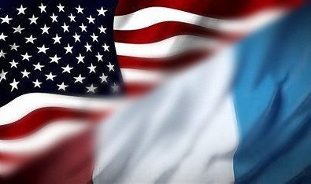

Website created by Oceane Poussin
Description: Our website is designed to help new French and American exchange students smoothly transition into their study abroad experience. By providing essential information, guidelines, and tips, the website assists students in navigating cultural differences, visa processes, and academic requirements, making the adjustment period less overwhelming.
The Problem it Solves: Exchange students often face challenges when adjusting to a new culture, understanding academic systems, and settling into daily life in a foreign country. Our website offers resources to bridge this gap by providing practical advice and essential information all in one place, helping students feel more prepared and confident.
Invest in Our Product: Our website simplifies the process of adapting to a new country, saving time and reducing stress for exchange students. It offers a unique blend of practical information, personalized advice, and community-driven content that addresses both academic and everyday needs. This tailored approach not only helps students adjust quickly but also fosters a supportive exchange community between France and America.